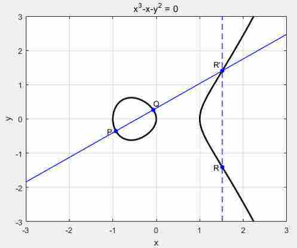
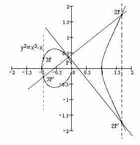

ECDH密钥分发算法
满足结合律交换律,根据几何图像,交换律显而易见,结合律未找到证明。
下面大写表示曲线上的点,小写表示数.
表示 PQ连线和曲线另外一个交点R′的x轴对称点R

P+Q=R
表示,P点切线,与曲线交点的x轴对称点

P+P+P=2⋅P+P=3P
已知 P为公钥, s为私钥, G为公共曲线参数
由s 和 G 求 P 很容易,
由P 和 G 求 s 很困难,
Pa=sa⋅G
Pb=sb⋅G
A 和 B 交换密钥流程
B 只用将 自己的私钥 sb 乘 A的公钥 获得 K1
A 只用将 自己的私钥 sa 乘 B的公钥 获得 K2
K1=sb⋅Pa=sb⋅sa⋅G=sa⋅sb⋅G=sa⋅(sb⋅G)=sa⋅Pb=K2
这样K1 , K2相等,就完成了交换.
两对密钥 公钥私钥交叉相乘结果相等
相乘是对应的椭圆曲线相乘法则
Ecc 加密过程
加密过程实际上是用的 ecdh 随机生成一个 密钥 Kr,然后在用对称加密算法 例如 AES 等使用此 Kr 加密。
已知密钥对 P=s⋅G (P公钥,s私钥)
随机生成一个密钥对 Pr sr
对应的加密
Kr=sr⋅P
- 然后使用AES , Kr 加密 明文M获得密文C,把临时公钥 (Pr C)作为结果返回
- 同时为了解密时候能校验是否解密成功,需要返回一个校验量 MAC,
可以是 HMAC(Pr,Kr,C)
如果AES加密是非密码本模式,需要返回初始化向量IV.
$K_r 是一个点,(X,Y)坐标编码成可加密的key,一般只需要 X坐标,因为Y坐标可以通过X坐标计算出来
解密过程
从加密方获得 已知密文 C,和临时公钥 Pr, 校验参数MAC
自己保密的私钥s
- 下面计算 对应的AES 密钥,
K2r=s⋅Pr
参考 ECCDH密钥分发算法 ,两对ECC密钥的公钥私钥交叉相乘结果是一样的. K2r=Kr
证明
K2r=s⋅Pr=s⋅sr⋅G=s⋅G⋅sr=P⋅sr=Kr
- 验证是否是结果是否正确
计算Mac2=HAMC(Pr,K2r,C)
Mac2==MAC 说明数据正确,反之报错,终止解密
- 通过 K2 进行对应的 AES 解密,进行解密获得明文TEXT
如果需要初始化向量IV,也应该从加密方直接获取,加密方要把 iv mac 密文C, 临时公钥Pr 一起返回
这里有一个在线加解密的网站实现了上面的ECC 加密过程,
采用 AES-256-CBC,返回值里面有初始化向量
网站的提供的默认公钥
BAjDe3ig3ZKh5xO0+aA5Zuakz2ukRfe0M3Jzg8nVFn/pnmD58qBX5Iwxk/IUNTm6TVZv7MZcXOcx0KzKORTMD4U=
私钥 fPtrf9iBkJTyEuCKbJuAxRoJEZJFOqPueQZ0mtsOC34=
曲线 secp256k1
椭圆方程的求解
y2=x3+ax+b(1)
y−yp=k(x−xp)(2)
其中
⎩⎪⎪⎨⎪⎪⎧k=xp−xqyp−yqk=2yp3xp2+aP != Q;连线的斜率P = Q;表示在该点切线的斜率,也就是导数
将 2 带入 1中,根据得到 ,根据根与系数关系(韦达定理)
anXn+bn−1Xn−1+...+a0=0x0+x1+...+xn=anan−1;x0⋅x1⋅...⋅xn=(−1)nana0*
得到
{xR=k2−xP−xQyR=−yP+k(xP−xR)
模素数P点运算
上面的说明是实数上的运算, 会有小数的问题,计算机处理起来有困难;采用模素数运算,可以很好的解决这个问题,所有的x,y都是整数,并且根据公共点G生成足够多的点,
上面的公式进一步变成
{xR=k2−xP−xQ(modp)yR=−yP+k(xP−xR)(modp)
⎩⎪⎨⎪⎧k=(yp−yq)⋅(xp−xq)－1(modp)k=(3xp2+a)⋅(2yp)−1(modp)
模素数P算法获取到的点已经绝大部分不再曲线了,全部分布在 [0 ,p-1] 这个正方形区间内.
模逆元
ab=1(modp)
ab 互为模逆元,
这里 由于p 取的素数, a,b都小于p,那么a,b和p都互质数,
模逆元必定存在(充要条件.a 和p 互质,那么,b存在);
快速求模逆元,可以用扩展欧几里得算法,具体方式就是辗转相除,细节可以看百科
大结局
这样,ECC加密过程基本清楚.
实际上,很多ECC文章写的ecc加密过程是这样
已知公钥 P,私钥s 消息 M,(也就是X,坐标,y坐标根据方程算出来);
加密过程 (Cm,Cp) 为加密结果
r为随机数.作为临时私钥
Cp临时公钥,和加密结果一起返回
Cm=M+r⋅PCp=r⋅G
解密过程,知道 C 和 S
M=C−s⋅Cp=M+r⋅P−s⋅Cp=M+(r⋅s⋅G−s⋅r⋅G)=M
减法表示逆元,对于任意 点P+(−P)=O
椭圆曲线零元是 无穷远处的点.作图可知P点逆元表示P的x轴对称点 P′
这种方式有一个缺点,就是计算过程比较麻烦,而且也是用到了dh秘钥交换的方式。
所以很多加密实现都是直接用 ecdh方式商定一个共同的随机私钥，再通过AES等对称加密方式进行加密，从而加速运算。
推荐资料
零知识证明 - 椭圆曲线基础